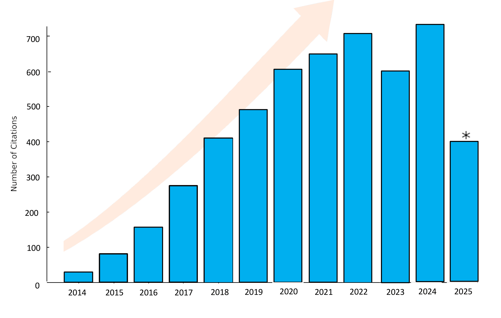
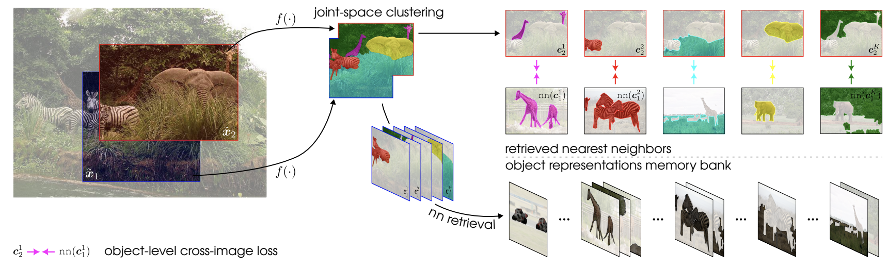
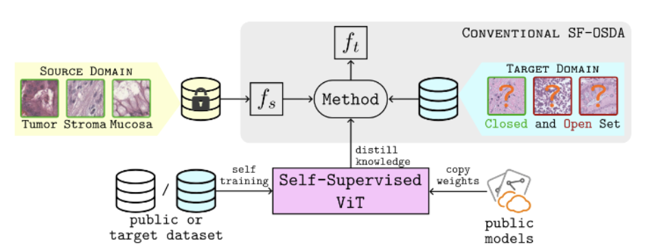
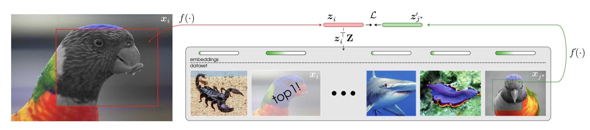
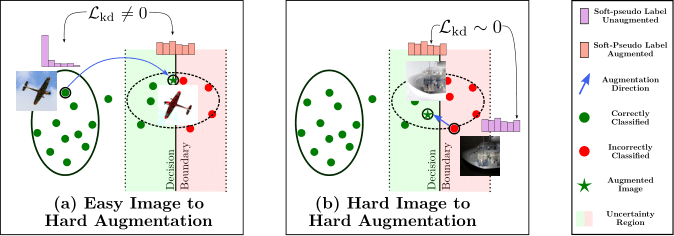
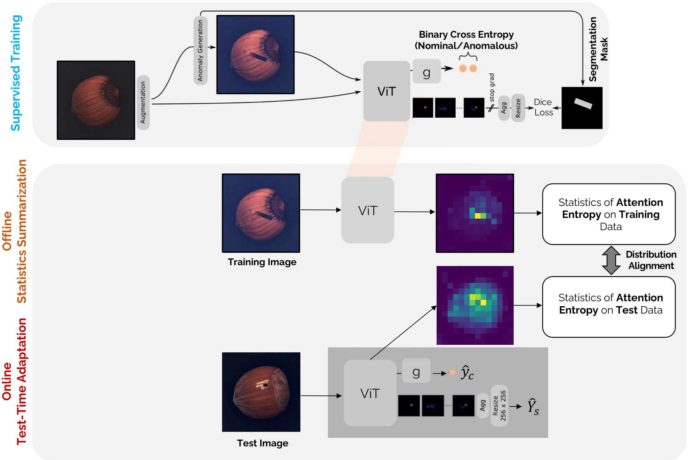

email: behzad.bozorgtabar [at] epfl [dot] ch


My principal research area lies at the intersection of computer vision and medical image analysis and machine learning. I have a strong interest in self-supervised methodologies on learning from limited data or labels, which I consider major avenues for innovation and impact for many vision-based applications. The ultimate goal of my research is to build next-generation intelligent machines that will tackle many of the most challenging problems in responsible AI, including reliability, generalization, and overcoming the hurdles posed by data and annotation scarcity. My aim is to ensure that AI systems are robust and reliable enough for deployment in critical, real-world applications.
I am organizing the EPFL Computer Vision Talks
YouTube Channel
 A complete list of my publications and patents can be found at Google Scholar
 *New* Un-Mixing Test-Time Normalization Statistics: Combatting Label Temporal Correlation
*New* Un-Mixing Test-Time Normalization Statistics: Combatting Label Temporal Correlation
Devavrat Tomar*, Guillaume Vray*, Jean-Philippe Thiran, Behzad Bozorgtabar
ICLR 2024
paper · github

*New* CrIBo: Self-Supervised Learning via Cross-Image Object-Level Bootstrapping
Tim Lebailly*, Thomas Stegmüller*, Behzad Bozorgtabar, Jean-Philippe Thiran, Tinne Tuytelaars
ICLR 2024 (Spotlight, Top 5%)
paper · github

*New* Distill-SODA: Distilling Self-Supervised Vision Transformer for Source-Free Open-Set Domain Adaptation in Computational Pathology
Guillaume Vray*, Devavrat Tomar*, Jean-Philippe Thiran, Behzad Bozorgtabar
IEEE Transactions on Medical Imaging (T-MI) 2024
paper

*New* Adaptive Similarity Bootstrapping for Self-Distillation based Representation Learning
Tim Lebailly*, Thomas Stegmüller*, Behzad Bozorgtabar, Jean-Philippe Thiran, Tinne Tuytelaars
ICCV 2023
paper · github
 CrOC: Cross-View Online Clustering for Dense Visual Representation Learning
CrOC: Cross-View Online Clustering for Dense Visual Representation Learning
Thomas Stegmüller*, Tim Lebailly*, Behzad Bozorgtabar, Tinne Tuytelaars, Jean-Philippe Thiran
CVPR 2023
project page · paper · github

TeSLA: Test-Time Self-Learning With Automatic Adversarial Augmentation
Devavrat Tomar*, Guillaume Vray*, Behzad Bozorgtabar, Jean-Philippe Thiran
CVPR 2023
project page · paper · github
AMAE: Adaptation of Pre-Trained Masked Autoencoder for Dual-Distribution Anomaly Detection in Chest X-Rays
Behzad Bozorgtabar, Dwarikanath Mahapatra, Jean-Philippe Thiran
MICCAI 2023
paper
ScoreNet: Learning Non-Uniform Attention and Augmentation for
Transformer-Based Histopathological Image Classification
Thomas Stegmüller, Behzad Bozorgtabar, Antoine Spahr, Jean-Philippe Thiran
WACV 2023
project page · paper · github

Anomaly Detection and Localization Using Attention-Guided Synthetic Anomaly
and Test-Time Adaptation
Behzad Bozorgtabar, Dwarikanath Mahapatra, Jean-Philippe Thiran
BMVC 2022
paper
OptTTA: Learnable Test-Time Augmentation for
Source-Free Medical Image Segmentation Under Domain Shift
Devavrat Tomar, Guillaume Vray, Jean-Philippe Thiran, Behzad Bozorgtabar
MIDL 2022 (Oral)
project page · paper · github
Self-Rule to Multi-Adapt: Generalized Multi-source Feature Learning
Using Unsupervised Domain Adaptation for Colorectal Cancer Tissue Detection
Christian Abbet, Linda Studer, Andreas Fischer, Heather Dawson, Inti Zlobec,
Behzad Bozorgtabar, Jean-Philippe Thiran
MedIA Journal 2022
paper ·
github
Self-Supervised Generative Style Transfer for One-Shot Medical Image Segmentation
Devavrat Tomar, Behzad Bozorgtabar, Manana Lortkipanidze, Guillaume Vray,
Mohammad Saeed Rad, Jean-Philippe Thiran
WACV 2022
paper ·
github
Learning Whole-Slide Segmentation from Inexact and
Incomplete Labels using Tissue Graphs
Valentin Anklin, Pushpak Pati, Guillaume Jaume, Behzad Bozorgtabar,
Antonio Foncubierta-Rodríguez, Jean-Philippe Thiran, Mathilde Sibony,
Maria Gabrani, Orcun Goksel
MICCAI 2021
paper ·
github
 SOoD: Self-Supervised Out-of-Distribution Detection
SOoD: Self-Supervised Out-of-Distribution Detection
Under Domain Shift for Multi-Class Colorectal Cancer Tissue Types
Behzad Bozorgtabar, Guillaume Vray, Dwarikanath Mahapatra, Jean-Philippe Thiran
ICCVW 2021
paper ·
github
Quantifying Explainers of Graph Neural Networks in Computational Pathology
Guillaume Jaume, Pushpak Pati, Behzad Bozorgtabar, Antonio Foncubierta-Rodríguez,
Florinda Feroce, Anna Maria Anniciello, Tilman Rau, Maria Gabrani,
Jean-Philippe Thiran, Orcun Goksel
CVPR 2021
paper ·
github
Self-Attentive Spatial Adaptive Normalization for Cross-Modality Domain Adaptation
Devavrat Tomar, Manana Lortkipanidze, Guillaume Vray,
Behzad Bozorgtabar, Jean-Philippe Thiran
IEEE Transactions on Medical Imaging (T-MI) 2021
paper ·
github
Self-Rule to Adapt: Learning Generalized Features from Sparsely-Labeled Data
Using Unsupervised Domain Adaptation for Colorectal Cancer Tissue Phenotyping
Christian Abbet, Linda Studer, Andreas Fischer, Heather Dawson, Inti Zlobec,
Behzad Bozorgtabar, Jean-Philippe Thiran
MIDL 2021
paper ·
github
 Self-Taught Semi-Supervised Anomaly Detection on Upper Limb X-rays
Self-Taught Semi-Supervised Anomaly Detection on Upper Limb X-rays
Antoine Spahr , Behzad Bozorgtabar, Jean-Philippe Thiran
ISBI 2021
paper·
github
 Benefiting from Bicubically Down-Sampled Images for
Benefiting from Bicubically Down-Sampled Images for
Learning Real-World Image Super-Resolution
Mohammad Saeed Rad, Thomas Yu, Claudiu Musat, Hazım Kemal Ekenel,
Behzad Bozorgtabar, Jean-Philippe Thiran
WACV 2021
paper
SALAD: Self-Supervised Aggregation Learning for Anomaly Detection on X-Rays
Behzad Bozorgtabar, Dwarikanath Mahapatra, Guillaume Vray, Jean-Philippe Thiran
MICCAI 2020
paper ·
github
 Divide-and-Rule: Self- Supervised Learning for Survival Analysis in Colorectal Cancer
Divide-and-Rule: Self- Supervised Learning for Survival Analysis in Colorectal Cancer
Christian Abbet, Inti Zlobec, Behzad Bozorgtabar, Jean-Philippe Thiran
MICCAI 2020
paper ·
github
Pathological Retinal Region Segmentation From OCT Images
SynDeMo: Synergistic Deep Feature Alignment for Joint Learning of Depth and Ego-Motion
SROBB: Targeted Perceptual Loss for Single Image Super-Resolution
Using Photorealistic Face Synthesis and Domain Adaptation
Learn to Synthesize and Synthesize to Learn
Image-Level Attentional Context Modeling Using Nested-Graph Neural Networks
MSMCT: Multi-State Multi-Camera Tracker
Using Geometric Relation Based Augmentation
Dwarikanath Mahapatra, Behzad Bozorgtabar, Jean-Philippe Thiran, Ling Shao
CVPR 2020
paper
Behzad Bozorgtabar, Mohammad Saeed Rad, Dwarikanath Mahapatra, Jean-Philippe Thiran
ICCV 2019
paper ·
supplementary material
Mohammad Saeed Rad, Behzad Bozorgtabar, Urs-Viktor Marti,
Max Basler, Hazım Kemal Ekenel,
Jean-Philippe Thiran
ICCV 2019
paper ·
supplementary material
to Improve Facial Expression Analysis
Behzad Bozorgtabar, Mohammad Saeed Rad, Hazım Kemal Ekenel, Jean-Philippe Thiran
FG 2019
paper ·
github
Behzad Bozorgtabar, Mohammad Saeed Rad, Hazım Kemal Ekenel, Jean-Philippe Thiran
CVIU 2019
paper ·
github
Guillaume Jaume, Behzad Bozorgtabar, Hazım Kemal Ekenel,
Jean-Philippe Thiran, Maria Gabrani
NeurIPS 2018
paper
Behzad Bozorgtabar, Roland Goecke
IEEE TCSVT 2018
paper
Grants
Personalized Health and Related Technologies (PHRT) Swiss Cancer League Discovery Translation Fund (DTF 2.0) Teaching
2019-Present Image analysis and pattern recognition (EE-451-4 ECTS- Bozorgtabar &
Thiran), EPFL
2019-Present Lab in signal and image processing (EE-490(f)-4 ECTS- Bozorgtabar & Thiran), EPFL